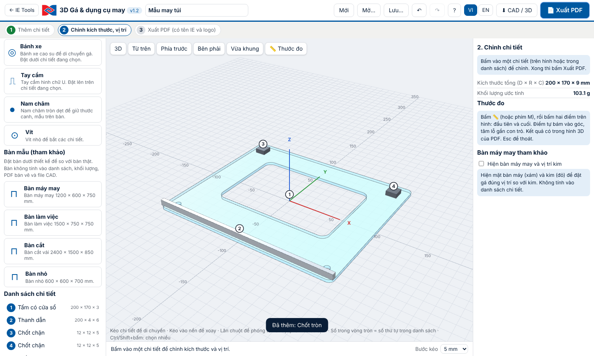
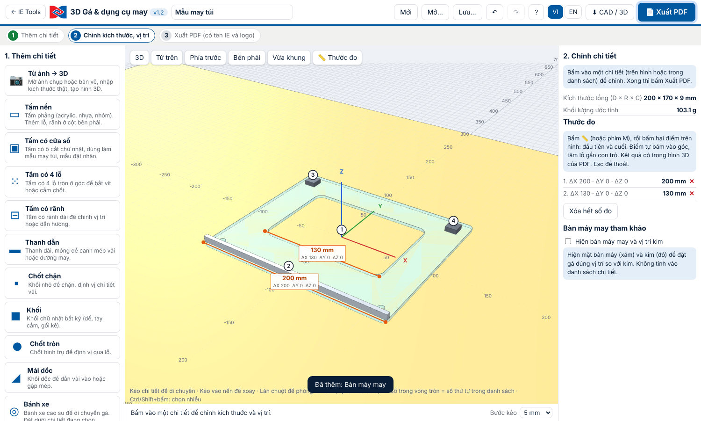
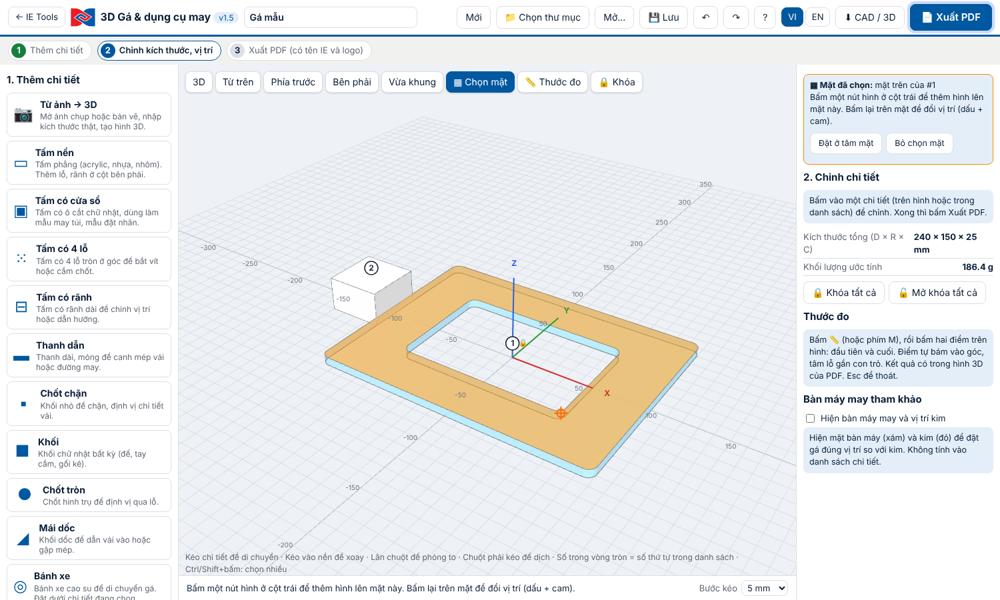
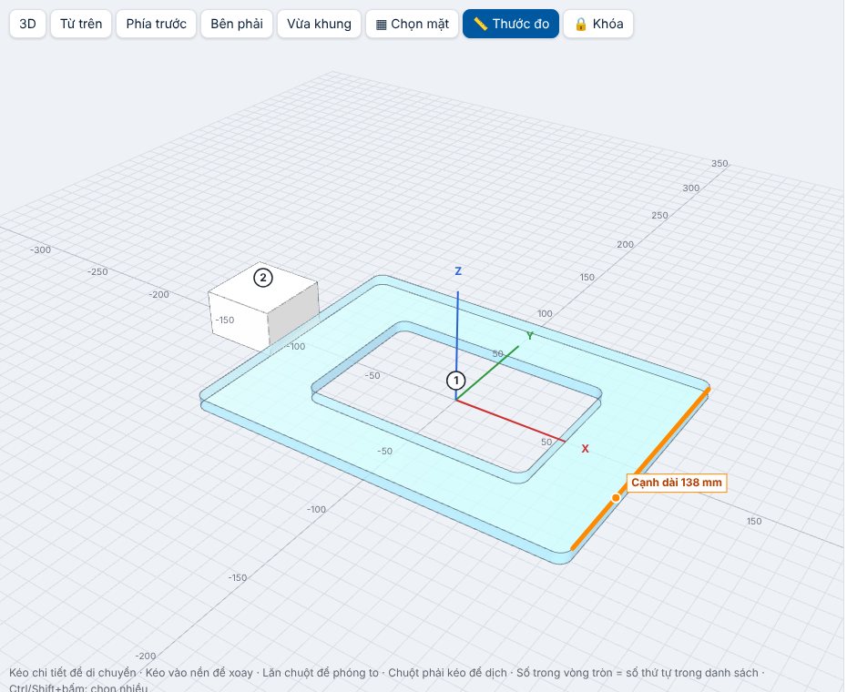
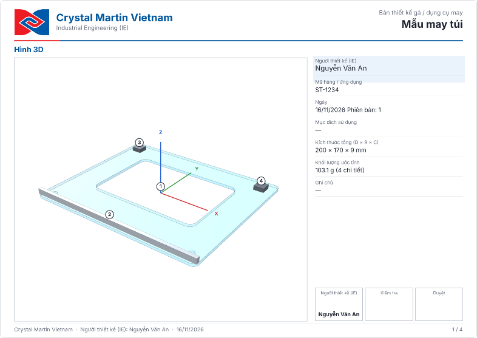
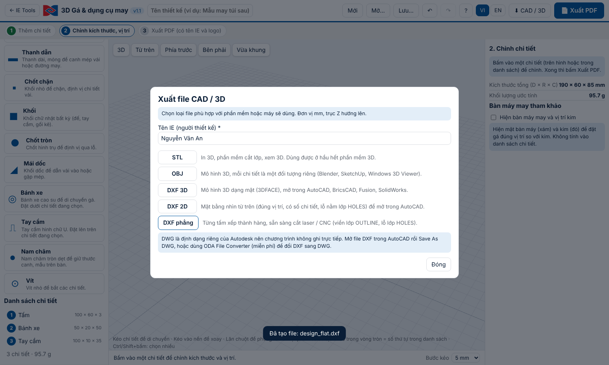
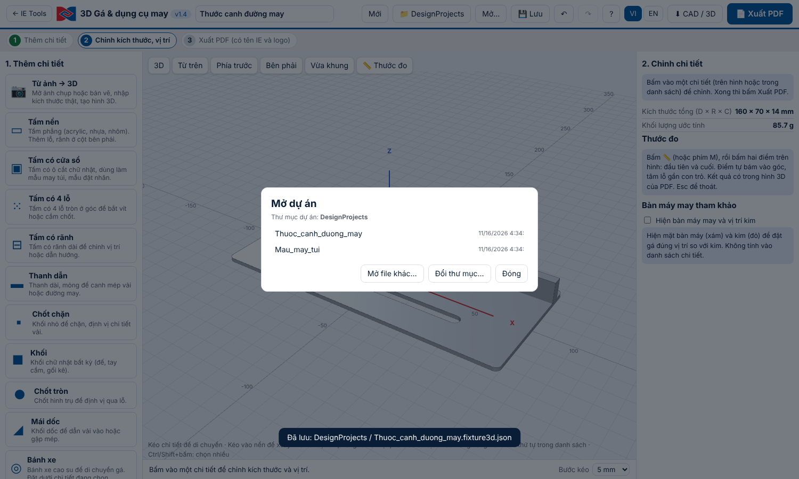

3D Gá & dụng cụ may
Thiết kế gá (jig), mẫu (template), thước canh và dụng cụ hỗ trợ may bằng 3D, rồi xuất PDF có logo Crystal Martin Vietnam và tên IE. Không cần biết 3D. Chạy bằng Chrome hoặc Edge, không gửi dữ liệu đi đâu. Công cụ này khác với Layout Sim (bố trí chuyền).
1. Giới thiệu


2. Ba bước

| Bước | Làm gì |
|---|---|
| 1. Thêm chi tiết | Bấm một nút ở cột trái. Chi tiết mới nằm cạnh các chi tiết cũ; nếu đang chọn một chi tiết thì chốt, thanh, khối mới được đặt lên trên chi tiết đó. |
| 2. Chỉnh | Bấm vào chi tiết (trên hình hoặc trong danh sách). Nhập Dài, Rộng, Cao, vị trí X, Y, Z ở cột phải, hoặc kéo chi tiết bằng chuột. Kéo vào nền trống để xoay hình, lăn chuột để phóng to, chuột phải kéo để dịch. |
| 3. Xuất PDF | Bấm 📄 Xuất PDF, nhập tên IE, xem trước, bấm ⬇ Tải PDF. |
3. Các loại chi tiết
| Nút | Dùng cho |
|---|---|
| Tấm nền, Tấm có cửa sổ, Tấm có 4 lỗ, Tấm có rãnh | Mặt gá, mẫu cắt, mẫu đặt nhãn, mẫu may túi. Tấm có thể thêm lỗ tròn, rãnh, cửa sổ chữ nhật và bo góc. |
| Thanh dẫn, Chốt chặn, Khối | Canh mép vải, chặn, đế, tay cầm, gối kê. |
| Chốt tròn | Chốt định vị đi qua lỗ. |
| Mái dốc | Dẫn vải vào, gập mép. |
| Bánh xe | Bánh cao su để di chuyển gá. Khi đang chọn một chi tiết, bánh được đặt dưới chi tiết đó (Z âm); nhân bản và nhập X, Y để đặt đủ 4 bánh. |
| Tay cầm | Tay cầm chữ U; đặt lên trên chi tiết đang chọn. Chỉnh Dài, Đường kính thanh, Cao. |
| Nam châm, Vít | Nam châm tròn dẹt giữ thước canh trên bàn; vít nhỏ bắt các chi tiết (là chốt tròn kích thước sẵn). |
Vật liệu: acrylic trong, nhựa ABS/PVC, nhôm, thép, gỗ ép, cao su/mút. Chương trình ước tính khối lượng theo khối lượng riêng của vật liệu (đã trừ lỗ).
4. Chỉnh chi tiết
- Dài / Rộng / Cao (Dày): Dài theo hướng ngang (X), Rộng theo hướng ra xa (Y), Cao theo hướng lên (Z).
- X, Y, Z: vị trí so với gốc 0. Z là độ cao của mặt đáy chi tiết (0 = trên mặt bàn). Nút ⬆ Đặt lên trên tự tính Z để chi tiết nằm trên các chi tiết bên dưới.
- Xoay: ⟲ 90°, ⟳ 90° hoặc nhập góc.
- Lỗ, rãnh, cửa sổ (chỉ tấm): vị trí tính từ tâm tấm. Bản vẽ PDF đổi sang tọa độ từ góc dưới trái của tấm để gia công.
- Bàn máy may tham khảo (khi chưa chọn chi tiết nào, cột phải): hiện mặt bàn máy và vị trí kim để đặt gá đúng so với kim; kim cũng có trên bản vẽ PDF.
- Ô Bước kéo (dưới hình 3D): 1, 5 hoặc 10 mm khi kéo chuột; giữ Alt để kéo tự do.



4b. Bàn mẫu (tham khảo)
Mục Bàn mẫu ở cột trái có bàn máy may (1200 × 600 × 750), bàn làm việc (1500 × 750 × 750), bàn cắt (2400 × 1500 × 850) và bàn nhỏ (600 × 600 × 700). Bàn được đặt dưới thiết kế (mặt bàn ở Z = 0) để so sánh với bàn thật. Có thể chỉnh Dài, Rộng, Cao, Dày mặt bàn.
Bàn là chi tiết chỉ để tham khảo: có trên hình 3D (và hình 3D của PDF) nhưng không tính vào danh sách, khối lượng, bản vẽ PDF và file CAD. Tích ô Chỉ để tham khảo ở cột phải để đặt cho bất kỳ chi tiết nào khác.
4a. Thêm hình lên một mặt (như Onshape)
Bấm ▦ Chọn mặt (hoặc phím F). Rê chuột lên chi tiết: mặt dưới con trỏ sáng lên. Bấm để chọn mặt (mặt chuyển màu cam, dấu + cam là điểm đặt). Rồi bấm một nút hình ở cột trái: hình mới được đặt đúng lên mặt đó, tại điểm vừa bấm.
- Mặt trên: hình đứng trên mặt. Mặt dưới: hình treo dưới mặt. Mặt bên: hình áp sát vào mặt (thanh dẫn song song với mặt, bánh xe có trục vuông góc mặt).
- Bấm lại trên mặt để đổi điểm đặt; nút Đặt ở tâm mặt chọn tâm mặt; Bỏ chọn mặt hoặc Esc để thoát. Mặt đã chọn vẫn giữ để thêm nhiều hình liên tiếp.
- Mặt tự bỏ chọn khi chi tiết chứa nó bị đổi kích thước hoặc di chuyển.


4c. Thước đo
Bấm 📏 Thước đo (hoặc phím M), rồi bấm hai điểm trên hình. Điểm tự bám vào góc chi tiết và tâm lỗ gần con trỏ (đường nét đứt hiện khi di chuột). Khi rê chuột, cạnh hoặc đỉnh gần con trỏ được tô sáng màu cam (kèm tên và chiều dài cạnh); điểm giữa cạnh cũng bám được; cạnh bị che khuất không được chọn. Kết quả gồm độ dài và ΔX, ΔY, ΔZ, được liệt kê ở cột phải (có nút xóa) và in trong hình 3D của PDF. Esc để thoát thước đo. Hai trục X, Y cũng có thang chia mm, tự đổi bước theo mức phóng to.


4e. Khóa vị trí
Chọn một hoặc nhiều chi tiết rồi bấm 🔒 Khóa (hoặc phím L, hoặc nút Khóa vị trí ở cột phải). Chi tiết bị khóa không kéo được, không dịch bằng phím mũi tên, không đổi X, Y, Z và góc xoay; vẫn đổi được kích thước, vật liệu và lỗ. Chi tiết khóa có biểu tượng 🔒 trên hình và trong danh sách; kéo chuột vào chi tiết khóa sẽ xoay hình như kéo vào nền. Bấm lại để mở khóa. Khi chưa chọn chi tiết nào có nút Khóa tất cả / Mở khóa tất cả. Trạng thái khóa được lưu cùng dự án.
4d. Từ ảnh sang 3D
Bấm 📷 Từ ảnh → 3D ở đầu cột trái.
- Chọn ảnh (hoặc kéo thả, hoặc dán Ctrl+V). Nên chụp thẳng từ trên, vật thể đậm màu trên nền sáng; chụp nghiêng sẽ bị méo.
- Chương trình lấy đường viền (cả lỗ bên trong) và vẽ lên ảnh để kiểm tra. Chỉnh Ngưỡng nếu thiếu hoặc thừa, Đảo nếu vật sáng trên nền tối, Tô đầy hình kín nếu ảnh chỉ có nét viền, Làm mịn và Bỏ đốm nhỏ để đường viền gọn.
- Nhập kích thước thật: Dài (hoặc Rộng); số còn lại tự tính theo tỉ lệ ảnh. Nhập Dày và vật liệu.
- Bấm Tạo chi tiết 3D: ra một chi tiết Hình tự do, dùng được như mọi chi tiết khác (gộp / cắt, offset, PDF, CAD).

5. Gộp / cắt hình
Giữ Ctrl hoặc Shift rồi bấm để chọn nhiều chi tiết (trên hình hoặc trong danh sách). Chi tiết chọn đầu tiên là chi tiết gốc. Cột phải hiện ba lệnh:
| Lệnh | Kết quả |
|---|---|
| ⊕ Gộp thành một khối | Cộng các hình lại thành một chi tiết. Các chi tiết phải cùng độ cao đáy (Z) và cùng độ dày; nếu khác, chương trình báo để chỉnh trước. |
| ⊖ Cắt bỏ phần trùng | Trừ các chi tiết chọn sau khỏi chi tiết gốc (ví dụ khoét một cửa sổ có hình bất kỳ). Lấy độ dày của chi tiết gốc. |
| ⊗ Giữ phần giao nhau | Chỉ giữ phần các hình chồng lên nhau. |
Nối hai hình gần nhau: khi các hình chưa chạm nhau, cột phải báo khe hở (ví dụ ≈ 6 mm). Nhập Khe hở tối đa được nối rồi bấm 🔗 Nối thành một hình: các hình được nối liền thành MỘT hình (khe hở được lấp, các góc trong bo tròn). Các hình phải cùng độ cao đáy và độ dày; lỗ có sẵn được giữ nguyên.
Kết quả là một chi tiết Hình tự do: vẫn đổi được vật liệu, độ dày, Dài / Rộng (co giãn cả hình), xoay, và có trong PDF và file CAD. Muốn làm lại, bấm Ctrl+Z. Hình tự do không còn bảng lỗ; muốn đổi lỗ, hãy sửa chi tiết gốc rồi gộp lại.

6. Offset (nới / thu viền)
Chọn một chi tiết, cuộn cột phải đến mục Offset. Nhập Khoảng cách (mm), chọn áp dụng cho Viền ngoài hoặc Lỗ / cửa sổ, rồi bấm ➕ Nới ra hoặc ➖ Thu vào.
- Viền ngoài + Nới ra: tấm to đều ra mọi phía (góc ngoài được bo tròn). Dùng làm khung viền, tấm đế rộng hơn.
- Lỗ / cửa sổ + Nới ra: lỗ và cửa sổ rộng đều ra; dùng làm khe hở cho mẫu vừa khít.
- Ô Giữ chi tiết gốc, tạo thêm bản sao (mặc định bật): chi tiết gốc được giữ để so sánh hoặc dùng cùng lệnh Cắt để làm khung.

7. Xuất PDF
Tên IE là bắt buộc (nút Tải PDF bị khóa nếu để trống; tên được nhớ cho lần sau). Có thể nhập thêm mã hàng, mục đích sử dụng, ghi chú, phiên bản và ngày. Bản xem trước hiện từng trang; bỏ chọn trang nào không cần.





8. Xuất file CAD / 3D
Bấm ⬇ CAD / 3D ở đầu trang, nhập tên IE (ghi vào file) rồi chọn loại file. Đơn vị mm, trục Z hướng lên.
| File | Dùng cho |
|---|---|
| STL | In 3D, phần mềm cắt lớp, xem 3D. Dùng được ở hầu hết phần mềm. |
| OBJ | Mô hình 3D, mỗi chi tiết một đối tượng (Blender, SketchUp, Windows 3D Viewer). |
| DXF 3D | Mô hình 3D dạng mặt (3DFACE) cho AutoCAD, BricsCAD, Fusion, SolidWorks. |
| DXF 2D | Mặt bằng nhìn từ trên, đúng vị trí, số chi tiết ghi trên hình, lớp OUTLINE (viền), HOLES (lỗ), LABEL, INFO (tên thiết kế, tên IE, ngày). |
| DXF phẳng | Từng tấm xếp thành hàng, sẵn sàng cắt laser / CNC. |
9. Lưu và mở thiết kế
Lần đầu bấm 💾 Lưu (hoặc Ctrl+S), chương trình hỏi thư mục dự án. Chọn một thư mục (ví dụ trên ổ chung) và bấm Cho phép. Từ đó mỗi lần bấm Lưu, dự án được ghi thẳng vào thư mục này, không tải file về; cùng tên thiết kế thì ghi đè cùng một file. Đổi tên thiết kế rồi Lưu sẽ tạo file mới. Tên thư mục hiện ở nút 📁 trên đầu trang; bấm nút đó để đổi thư mục.
Mở… liệt kê các dự án trong thư mục (mới nhất ở trên); bấm một dòng để mở. Có thêm Mở file khác… và Đổi thư mục…. Trình duyệt không hỗ trợ chọn thư mục (không phải Chrome / Edge) sẽ tải file về như bình thường. Chương trình cũng tự giữ bản đang làm trong trình duyệt này.


10. Phím tắt
| Phím | Tác dụng |
|---|---|
| F | Bật / tắt chọn mặt |
| L | Khóa / mở khóa chi tiết đang chọn |
| M | Bật / tắt thước đo |
| Ctrl / Shift + bấm | Chọn thêm / bỏ chọn một chi tiết |
| Delete | Xóa các chi tiết đang chọn |
| R / Shift+R | Xoay 90° phải / trái |
| Mũi tên (Shift = ×10) | Dịch chuyển theo bước kéo |
| Ctrl+D | Nhân bản |
| Ctrl+Z / Ctrl+Y | Hoàn tác / làm lại |
| Ctrl+S | Lưu file thiết kế |
11. Xử lý sự cố
| Hiện tượng | Cách xử lý |
|---|---|
| Màn hình 3D trắng / báo lỗi | Dùng Chrome hoặc Edge mới; bật tăng tốc phần cứng trong Cài đặt. |
| Không tải được PDF | Nhập tên IE; cho phép tải nhiều file nếu trình duyệt hỏi. |
| Không chọn được chi tiết nhỏ | Chọn trong danh sách bên trái, hoặc phóng to hình. |
| Sau khi cập nhật, giao diện cũ | Nhấn Ctrl+F5. |